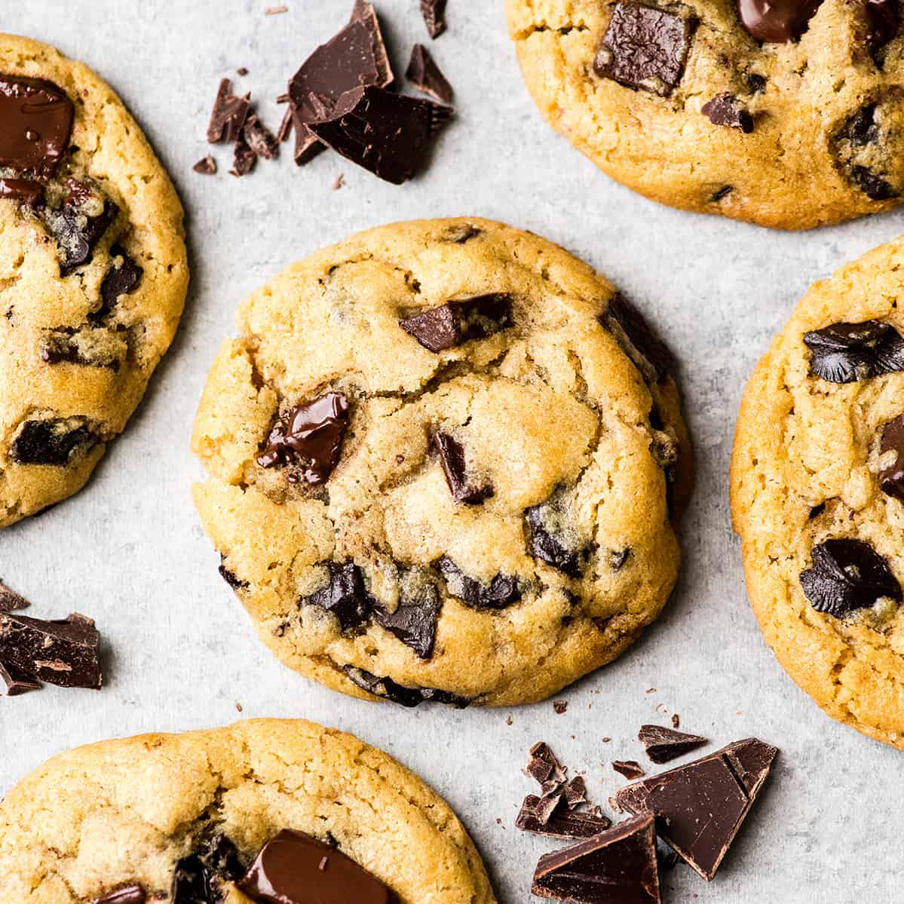

Teddy's Chocolate Chip Cookies

Description
In this recipe, you will be working to create very simple, easy to make chocolate chip cookies.
This recipe will not require much expertise with the simple instructions provided.
You should end up with 36 cookies
Ingredients
- 1 cup salted butter, softened
- 1 cup granulated sugar
- 1 cup light brown sugar, packed
- 2 teaspoons pure vanilla extract
- 2 large eggs
- 3 cups all-purpose flour
- 1 teaspoon baking soda
- 1/2 teaspoon baking powder
- 1 teaspoon sea salt
- 2 cups chocolate chips
Instructions
- Preheat oven to 375 degrees F and line three baking sheets with parchment paper set aside
- In a medium bowl mix flour, baking soda, baking powder and salt. Set aside
- Cream together butter and sugars until combined
- Beat in eggs and vanilla until light (about 1 minute)
- Mix in the dry ingredients until combined
- Add chocolate chips and mix well
- Roll 2-3 tablespoons(depending on how large you like your cookies) of dough at a time into balls and place them evenly spaced on your prepared cookie sheets
- Bake in preheated oven for approximately 8-10 minutes. Take them out when they are just barely starting to turn brown
- Let them sit on the baking pan for 5 minutes before removing to cooling rack